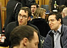
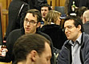

This is the preview of the real programme. What appears here doesn't appear on the real web site until it is published.
| Sunday 1st July | ||||
| 13:00 19:00 | Building Fast Search Application In a Day James Atherton 7digital Greg Sochanik | Effective architecture sketches Simon Brown Coding the Architecture Marcin Floryan Energized Work / Emergn | Hands-On: Continuous Deployment Robert Chatley Develogical Ltd | |
| Monday 2 July | ||||||
| 08:30 09:00 | Registration | |||||
| 09:00 09:30 | Opening Plenary | |||||
| 09:45 12:30 | Difficult Conversations Workshop Marcin Floryan Energized Work / Emergn Marc Johnson ThoughtWorks | TDD and Non-Functionals Keith Braithwaite Zuhlke Ltd | Living with Live Code Jason Ayers | The Pair Programming Interview Hibri Marzook 7digital Paul Shannon 7digital | ||
| 12:30 13:30 | Lunch | |||||
| 13:30 16:15 | Game On: From Game-Zero to Gaming in No Time Ryan Haney Redgate Mark Dalgarno Software Acumen | Introduction to ClojureScript Jon Paul Caplin Systems Ltd | Full-On Test-Driven Development of Embedded Software Immo Hüneke Zuhlke Engineering Ltd | (empty) | ||
| 16:30 17:00 | Invited Rant: Francine Bennett | |||||
| 17:00 18:00 | Birds of a Feather Sessions | |||||
| 18:00 onwards | Diversions | |||||
| Wednesday 4th July | |||||
| 08:30 09:30 | Registration | ||||
| 09:30 10:45 | Tribal Leadership Portia Tung UBS | The Butterfly flaps its wings. Is TDD complex or simple? Steve Freeman HIgher Order Logic James Dobson Ugly Duckling | Dirty Jobs Willem van den Ende Living Software B.V. Rob Westgeest Westgeest Consultancy | Ambiguous vocabulary in identifier names Simon Butler Computing Department The Open University Helen Sharp The Open University | |
| 11:00 12:15 | Inside the Cloud — Oxfam’s Experience Graham Oakes Graham Oakes Ltd Stewart Marshall Oxfam GB | Ethics and professionalism. The current state of affairs Giovanni Asproni Asprotunity Limited | |||
| 12:15 13:15 | Lunch | ||||
| 13:15 13:45 | What floats my boat - Portia Tung | ||||
| 14:00 15:15 | Leonardo's Workshop - Educating Masters of Software Development David West New Mexico Highlands University | Do you speak vim? Emmanuel Gaillot /ut7 Jonathan Perret /ut7 | Hands on Hybrid Applications with MongoDB and Hadoop Chris Harris 10gen | A Good Read Duncan McGregor Independent Richard Care Octave Associates | |
| 15:30 | Closing Plenary | ||||